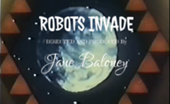

-
Introduction

-
History of Media

-
Remix

-
Ways of the Web

-
Web Native Storytelling

-
Web Native Planning

Week One Resources
-

Make a Mad Lib Story
Week One: Introduction
Week One Assignments
1: Watch the "Episode 1: Introduction video" and explore the pop up links in the video
2: Brainstorm a Project Synopsis
The Web Native Film should critically and creatively explore a story. An example might be your local organic farm, or the work of an area charity. Work with your group to create a paragraph description of what you would like to work on over the summer.
3: Prepare your supporting site
Go to tumblr.com and create a new blog. Make sure that each group member has the ability to log in. Discuss and decide on a Tumblr template that you want to use. We suggest using tumblr for its ease of use (www.tumblr.com), but use whatever blogging platform makes you most comfortable. If you have an existing blog, feel free to use that. The supporting site should:
4: Write a Blog Post
Tool: Your personal website, Tumblr, Wordpress, Blogger, etc.
Write a blog post on the week one guest speaker and initial thoughts on the project.
5: Make a Procedural Story with the Mad Libs Template
Tool: Popcorn
The "Robots In Everytown" template is meant to give an introduction to the concept of "procedural storytelling". The template allows you to change the maps, images and voices of the robots within the story. Discuss how these different user-generated options change the meaning and tone of the piece. Consider whether the video they create could be made in any medium other than the web. Why or why not?
6: Ice Breaker Activity
Tool: Big Blue Button, Google Hangouts, Voxli, Skype, etc
Just hang out with your group and have a social hour over video chat. Try Google Hangouts or use Skype Conferencing. Or meet up in person for an hour. We'll do an informal report-back on your social hour next week (i.e., we'll ask you if it was fun :)
Popcorn Reference
Keyboard Shortcuts
Spacebar allows you to Play and Pause the video playback. Using this shortcut will also update the timeline view if the playhead gets lost.
If you click an event and hold down SHIFT, then click another event, you can move both events on the timeline in sync using the arrow keys.
Using the up/down arrow keys allows you to move an event to a different track.
Click on an event and hit the delete key to remove it from the timeline.
Templates
A template provides a visual layout and is usually designed for a specific kind of project. Each template includes only specific plug-ins to keep the JavaScript as lightweight as possible. Clicking the +Popcorn Button at the bottom right of the interface, underneath the “My Events” panel, allows you to add plug-ins that are not specific to the template you’ve selected. You have to drag the plug-in you’d like to use and drop it in the My Events tray to add it to your template.
You can’t change your template after you’ve started a project, so choose carefully. When you click “create,” your project will be created, and you’ll enter the editor view.
Events
An event is a marker that says “do something” at a specific point in your film. To add an event to the timeline, you drag and drop the text from the My Events box to the Timeline! To delete an event from the Timeline, you click the event and hit the Delete key on your keyboard.
Popcorn has a great many plug-ins which allow you to pull events into your timeline. Because there are many plug-ins and templates, there are infinite variations and possibilities. No two Popcorn projects will be the same. But the authoring pattern is always the same: choose a plug-in, add it to the timeline, and configure the event.
Tracks
A Popcorn project can have an infinite number of tracks. Tracks help you, the creator, organize events in the way that seems most logical to you. Maybe you want one track to visualize all the Twitter events. Or maybe you want one track to visualize all the cat-related events. It’s up to you. When you mouse over the name of a track, you’ll see an “X” to delete the track. In the track editor, you can see the code for the events that you’ve assigned to the track.
Saving, Exporting and Publishing
You can save your project, export the code of your project and/or publish your project to the WWW. In the upper right hand corner of the interface are buttons to accomplish these things. Just follow the on screen instructions and share your masterpieces with the world!
Peer Assessment Worksheet
Here are some broad topics and sample questions you can use to to think about the work of your peers:
Evidence of Data Gathering
Evidence of Understanding
Evidence of Reflection and Analysis
Evidence of Creativity
DIY Make a MadLib
DIY Make a Madlib
Add vintage titles, robots speaking, comic style speech bubbles and your own special brand of silly to make a mad lib.
- Open the Mad Lib template in your browser
- Start by using the Robots Invade Everytown video that is pre loaded into the template or click the Edit Source button in the upper left-hand corner of the video and change the URL to the URL of the video you want to work with.
- Double click the title event and change the title. Add other title events to new tracks and double click to change the positionings to middle title or bottom title using the style selector and target selector. If you need a new track, click the Track + button on the lower left-hand side of the interface. Don’t forget to include your name somewhere!
- After you’ve clicked done on each of the title events, double click the Speak events on the timeline. You can change the robots speech by typing in new text. Double click to change what the robot voice says and play around with those options.
- Center the map at second :19 to the location the robots will be invading first. Double Click to set this location and click done.
- Edit the image event in the timeline around :25. The robots are targeting a specific person. Who is it?
- Double Click the “Zoink” event and change the text. You can also change the bubble style. Try out different positions for your bubble. Play around with the options so that your Zoink bubble is positioned the way you like.
- Continue adding and editing events until your video is what you want it to be. When you’re ready, click the “publish” button and copy and paste your link to save it somewhere. Then, click the “view source” button and save your code. You can also save your project on mozillapopcorn.org by clicking the “save” button.
- Share with the world. Share your video link widely. Tweet your video link with the tag #AllHailRobots
- While waiting for the invasion, iterate your project based on feedback you receive.